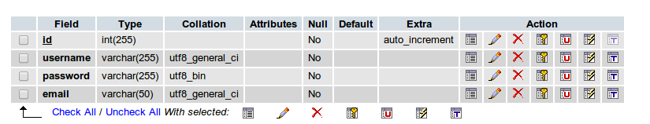
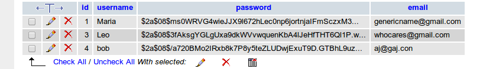

Welcome to my tutorial. I made this tutorial as a student for a web development course. how to make a really strong password login system to protect against hackers. In the process, I learned a lot about hashing and web security in general. I was also surprised to see how few web developer tutorials are up to date on security issues. There were a lot of tutorials for log-in systems that mentioned using md5's and sha1!
As a result, I am writing a tutorial on PHPass, (pronounced "ph-pass"). If you are using php 5.5 or newer, this may not be the most up to date method. However, as not everyone has 5.5 installed just yet, PHPass is still a great way to secure passwords. Hashing is the very first thing every aspiring web developer should know to not only protect your client, but also yourself from harm.
Now, as I was doing research on PHPass, I also discovered there was a dearth of good tutorials on creating a basic login and user accounts for a webpage connected to a database. So in this tutorial I will show you not just how to use PHPass, but also how to use it in the context of creating a basic login and create user account pages for a website. In a later tutorial, I would like to show how to login using the accounts that have already been created.
First a little bit about password security to begin with. Let's start with this cartoon from xkcd:
Just recently, the popular web data encryption system OpenSSL has found a flaw called the Heartbleed bug. In order to protect themselves, millions of users all over the world are having to change their passwords to avoid being hacked.
For a really good video on password security with the php language, go here.
In order to beat your enemy, you need to know their strategies. Here is a list of basic ways that hackers can gain access to your password. Fortunately, PHPass combats many of these strategies.
There are many other ways that people can try to gain access to your password. The best thing you can do is to start off with a strong password, using the tips I just mentioned. Also, as a web developer, I can't emphasize enough how important it is to keep up to date on current hashing techniques and employ them with every database you use. To not do so could put you, your company or your clients at risk.
Now that I have discussed password security at length, here is a little bit about PHPass and how it works. PHPass is a portable hashing framework for use in php password entry applications. Although it can work with PHP 3 and above, it is recommended to have at least PHP 5.3.0 and above. If you have PHP 5.5 or later versions, you may find other, stronger password security libraries. To use it, you have to download the source file hereand link to it whenever you have a user enter a password into a database.
PHPass works by using a three-pronged approach to making password entry tough to crack. PHPass uses a strong combination of salting, key stretching, and Bcrypt. Salts are either added to the beginning or end of your hash, making them harder to crack, because they are truly random.Salting prevents rainbow table attacks. Key stretching is the processing of doing multiple iterations before producing output. Time is of the essence for hackers and this slows them down considerably. Bcrypt is meant as a way to prevent brute force hacking, which I previously discussed as being one of the more common methods of attack. It uses key stretching by setting the amount of iterations to be done per hash.
You will also need to set up the following files:
Go here to download PHPass. When you download it, you will create a separate file for the PHPass code called "PasswordHash.php"
Here is the basic database table I set up in phpMyadmin. Id is your primary field, and it is auto-incremented. For a standard website that someone wants to join as a user, you will want a username, password, and e-mail. Other tutorials will have you include salt as a field in the database, however PHPass already takes care of that for you. For those who are wondering, salt is an extra protection against brute force hackers.
If you are unfamiliar with setting up tables on a database using phpMyadmin, check out the following video tutorials on New Boston:
This is where we provide the user with a form for creating new accounts. Most websites include a captcha or email verification, or both. This could be a topic for a future tutorial.
The first step here is to create a php file that contains a valid html document inside of it. I called mine "index.php". It does not have to be a php file, you could make an html file instead if you are not going to run your php code here.
<!DOCTYPE html>
<html>
<head>
<meta charset="UTF-8">
<title>Create account</title>
</head>
<body>
</body>
</html>
Now inside the body tag, create your login form. There are three fields: one for the password, one for username, and one for e-mail. The submit button is what the user will press to submit all 3 fields. The action property of the form tag specifies the php file which I will call when the user submits the form. We will make that file later in the tutorial.
<p>Join us!</p>
<form action="create_user.php" method = "POST" name="create_user_account" onsubmit="return validateForm()">
Username: <input type="text" name="username">
Password: <input type="password" name="password">
Email: <input type="text" name="email">
<button type="submit">Join now</button>
</form>
The onsubmit function is how we validate the form in javaScript. In the head tag, you want to add a script tag and add the following code:
function validateForm()
{
var form = document.forms["create_user_account"];
if (form["username"].value == null || form["username"].value == "")
{
alert("Please choose a username");
return false;
}
if (form["password"].value.length < 10)
{
alert("Your password must be at least 10 characters long");
return false;
}
var atpos = form["email"].value.indexOf("@");
var dotpos = form["email"].value.lastIndexOf(".");
if (atpos < 1 || dotpos < atpos + 2 || dotpos + 2 >= form["email"].value.length)
{
alert("Not a valid e-mail address");
return false;
}
}
Here we are making sure that there has been some kind of input entered into each field. I am also enforcing a password length and performing a rudimentary email validation, to make sure that an "@" sign is included in the email field. There are many other functions you could add, such as validating password strength, checking to see if username is already taken, etc.
This would also be a great time to make your css file "create_user_style.css". I can't discuss the scope of how to create a CSS style sheet here, but for beginners I recommend checking out the book "HTML & CSS: design and build websites" by Jon Duckett. You could also check out thiswebsitefor basic lessons on CSS and HTML.
Here is where we finally get to bring in our trusty friend, PHPass while also (safely) connecting to the database. Create a php file (I called mine "create_user.php"). Make sure the name matches what you put in your forms action attribute.
For a stripped-down version of installing PHPass, go here.
Be sure to download PHPass here, if you haven't already.
<?php
//you must include this file wherever you work with passwords
require("PasswordHash.php");
//the first argument, 8, is the algorithm used for password stretching
//the second argument allows the program to use portable hashes
$hasher = new PasswordHash(8, false);
//retrieving password
$password = $_POST["password"];
//retrieving username
$username = $_POST["username"];
//retrieving e-mail
$email = $_POST["email"];
//keeping passwords to less than 72 characters helps to avoid denial-of-service attacks
if (strlen($password) > 72) {
die("Password must be 72 characters or less");
}
//creating the hash variable which stores the hash
$hash = $hasher->HashPassword($password);
//if hash is created we connect to the database
if (strlen($hash) >= 20) {
$con = mysqli_connect("myhost","myuser","mypassw","mydb");
if (mysqli_connect_errno()) {
echo "Failed to connect to MySQL: " . mysqli_connect_error();
} else {
//if connection is made, we insert the values(password is now hash) into the database
$result = mysqli_query($con, "INSERT INTO phpass (username, password, email) VALUES
('{$username}', '{$hash}', '{$email}')");
echo "<p>User created.</p> <a href='index.php'>Create another?</a>";
}
} else {
echo "Something went wrong";
}
Now check the database to see if an id has been assigned, username has been entered, password has been hashed, and e-mail has been entered. You will know the password has been hashed if it has been turned into a long string of characters. See the example below:
